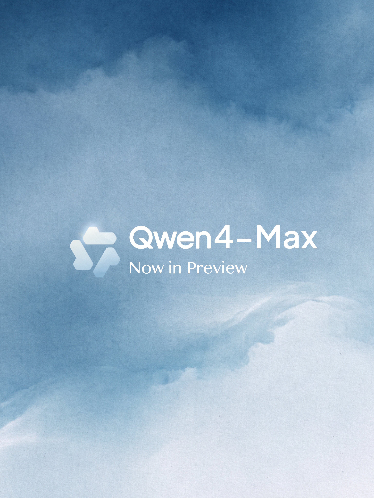
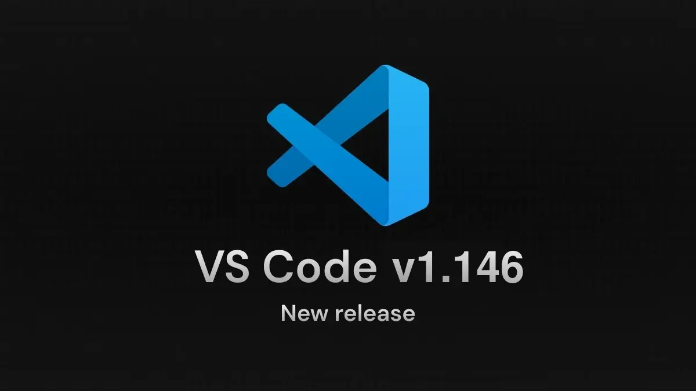
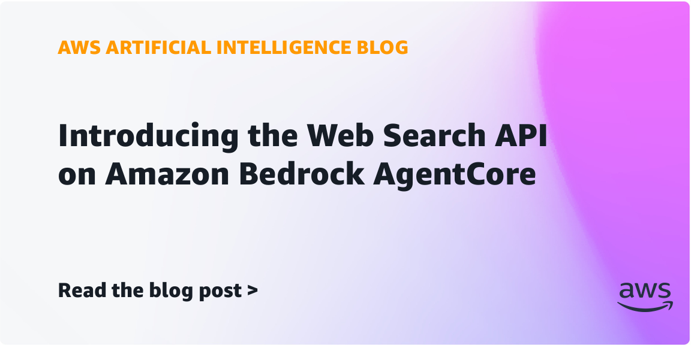
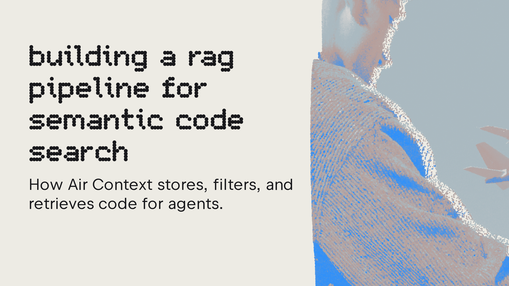

AI Intelligence Daily · 2026-11-12（周四）
统计窗口：2026-11-11 08:00 → 2026-11-12 08:00（上海 / Asia/Shanghai）· 事实与判断分区 · 国内/国际双轨 · 承接 11-11 日报与当日快讯（11:25 PUSH Qwen4-Max-Preview · 17:21 PUSH CodeBuddy 2.183.0 / MCP servers v2.4.0 六则 GHSA · 其后多轮 SILENT）· 过夜切片（约 15:20Z 之后）新发船：Gemini Decision 1 / Decisions API、Factory 1.9.0、Antigravity CLI 1.5.6、Bedrock AgentCore Web Search API · **一线 Desktop/CLI 功能发船 desktop_shipping = 3（CodeBuddy Code 2.183.0 · Factory CLI+Desktop 1.9.0 · Antigravity CLI 1.5.6）** · 不计：Factory 1.8.0（Identity+修复）· Codex 0.167.2（Vertex 增量 tool updates 默认）· Copilot prerelease 1.0.110-2 · Qwen Code v1.0.0-preview（GH 预发，npm latest 仍 0.27.2）· ZCode CDN 3.18.1（官方 changelog 仍 3.17.2）· Kimi Desktop 1.3.3（11-10，Polish/Fixes）· MiniMax Desktop 仍 3.1.14 · 千问办公仍 2.0.0 · Qoder changelog 仍 0.5.7 · dsh npm 仍 0.2.2-rc.1（GH 已有 rc.2）· kimi-code canary 2.6.0 · Amp 滚动构建 · npm：codex **0.167.2**（alpha **0.170.0-alpha.1**）/ claude-code **2.1.322** / codebuddy **2.183.0** / kimi-code **2.5.3** / @minimax-ai/code **0.7.6** / dsh **0.2.2-rc.1**（RC）/ agent-desktop **1.2.0** / @factory/cli **1.9.0** / @github/copilot **1.0.109**（prerelease **1.0.110-2**）/ @qwen-code/qwen-code **0.27.2** · Desktop：ZCode changelog **3.17.2** / CDN **3.18.1**（滞后，不升格）· MiniMax **3.1.14** · Kimi Desktop **1.3.3** · CodeBuddy **2.183.0** · 千问办公 **2.0.0** · Qoder **0.5.7** · Antigravity CLI **1.5.6** · ★（约 08:13 CST）：agent-desktop **22,055**（+687，仍 v1.2.0）· dsh-superagent-prototype **22,485**（+313）· deepseek-harness **278,985**（+805，rc.2）· agent-browser **49,850**（+660，仍 v0.42.0）· DeepInfer **25,866**（+57）· FlashProve **1,028**（+17）· Hyra-results **248**（+7）· opencode **226,176**（+274，仍 v2.2.7）· servers **91,934**（+19，正式 v2.4.0）· code-verification **165**（+76）
今日一句话判断
阿里把下一代旗舰 Qwen4-Max 以有明确截止日的预览送进 Token Plan，并同步开到千问办公 / Qoder / 千问 App / QwenStudio——这是今天国内最值得立刻对照评测的窗口；Credits 官方写法是限时 2 折、夜间再享 4 折即原标准的 0.8 折（8%），不是 11:25 快讯里的「夜间 4%」。 过夜真正的新原语是 Google 的 Gemini Decision 1 / Decisions API：一次请求最多给 1,000 道相互独立的是非、单选或量表题打分，不按 token 逐字解码，输出 token 计费为 0。同一天 MCP 官方参考服务器 v2.4.0 补了六则安全通告（只读 Git 工具可被仓库配置执行），VS Code 1.146 把 Local harness 排上 2027 年 2 月退役，并预览 Skills over MCP。desktop_shipping=3。
专栏一｜新闻
本栏结构：
- 国内头条：Qwen4-Max-Preview 进入 Token Plan 与办公/编程产品（快讯已 PUSH；本报校正 Credits，并确认过夜无新档位/权重/官方基准）
- 国际头条：Google Gemini Decision 1 / Decisions API（过夜新原语；官方 X 未发专帖，以博客与文档为准）
- 国际中栏：MCP 官方参考服务器 v2.4.0 六则 GHSA（快讯已 PUSH；日期版本线须显式升级；Windows 读竞态/junction 仍残余）
- 国际中栏：VS Code 1.146.0（Local harness 弃用至 2027-02、Skills over MCP Preview、沙箱凭据掩码、computer sharing 实验项）
- 国内中栏：腾讯 CodeBuddy Code 2.183.0（desktop_shipping；watchlist 234 / continuum 218）
- 国际中栏：Antigravity CLI 1.5.6（desktop_shipping；
/swarm board、Stop hookcontinuation_active、沙箱审查收口；watchlist 216 / 230 UPDATE） - 国际中栏：Amazon Bedrock AgentCore Web Search API（签名即调、不必先建网关；文称 $7 / 1,000 queries）
- 国际中栏：DeepMind AlphaGenome 2（细胞类型条件化基因组模型；非商业 API + 商业 private preview）
- 短讯合集：Qwen Code v1.0.0-preview · Factory CLI+Desktop 1.9.0（desktop_shipping；同窗 1.8.0 仍不计）· ERNIE 5.5 Flash Preview（中间检查点）· Kimi K3.1 Pro Highspeed 上架 Bedrock（白日漏收）· SageMaker 双向流按量计费 · Codex 0.167.2 · MCP 发布周期（六月一次，下一版瞄准 2027-03-30）· MCP 文件上下载扩展补录（11-10 首发，Daily 11-11 漏记）· Amazon mcp-gateway-registry 两则 High CVE · AWS Emulator 官方上线 · ByteStash 正确 ID 为 CVE-2026-126658
- 不升格：把 Qwen4 写成全家桶正式发布或沿用「夜间 4%」· 把 Qwen Code preview / npm 0.27.2 写成 latest 发船 · ZCode CDN 3.18.1（changelog 未追上）· Copilot 1.0.110-2 / Codex alpha / kimi-code canary · 把 Antigravity Skills 写成已随 AlphaGenome 2 上线 · 把 MCP 文件传输写成规范 GA · OpenRouter/Stripe 专页仍停在 8/19 协议稿 · ChatGPT 桌面 Finances（发行说明 403，仅官方 X）· Gemini CarPlay（消费向）· Nvidia 人事传闻
排序依据：重要度 → 与两条主线的相关性 → 时效。快讯已报条目按首次官方时间书写，并吸收过夜复核；Credits 校正单独标明，不改写到今日早晨。
1. Qwen4-Max-Preview：Qwen4 旗舰档进入 Token Plan 预览，并开到千问办公 / Qoder / 千问 App / QwenStudio
强A · NEW · 国内 · A/B/C/I · 11-11 10:01 CST · watchlist **233** · 非 Desktop 新客户端（千问办公仍 2.0.0，Qoder changelog 仍 0.5.7）· **CORRECTION：夜间 Credits 不是 4%**
发生了什么（事实）
- 官方 X：Qwen4 is coming（@Alibaba_Qwen，2026-11-11 10:01:09 / 02:01:09Z）。口径是「Qwen4 即将到来」，同时宣布 Qwen4-Max 已在阿里 Token Plan 预览，并可在 QwenWork（千问办公）、Qoder、Qwen APP、QwenStudio 提前使用。约 08:19 CST 工具读数：11,781 likes / 1,119,197 展示。本窗该账号未见其他档位、权重或官方基准的后续专帖。
qwen.ai/blog本轮仍无独立技术专文。 - 百炼 Token Plan 个人版文档（更新时间 Nov 11, 2026；本报 08:00 后再次打开原文）写明：模型 ID
qwen4-max-preview，别名qwen4.0-max-preview（账单统一显示后者）；预览期 2026-11-11 10:00 至 11-25 24:00（UTC+8），期间不做变更，预览结束后下线。Credits 原文是：「限时活动期间 Credits 消耗低至 2 折（相当于增加 5 倍用量），每晚 22:00–次日 08:00 再享 4 折（即原标准的 0.8 折）。」 - 校正 11:25 快讯：当时写成「Credits 低至 20% / 夜间 4%」。官方是限时 2 折（20%），夜间在此基础上再打 4 折，等于原标准的 0.8 折（8%），不是夜间 4%。本报以文档这句话为准。
- 文本生成文档把该模型标为「效果优先」，并注明 仅 Token Plan。官方规格（勿写成独立评测）：上下文 1M；支持思考模式、Function Calling、内置工具、结构化输出；可接受文本 / 图像 / 视频并文本作答；最大输出 393,216（思考+输出）。文档还写：Token Plan 个人版目前仅支持新加坡地域；使用范围限于编程/智能体工具的交互式使用。
- @qoder_ai_ide 02:31:54Z：过去 4 天匿名日更的 Qoduck 现具名为 Qwen4-Max-Preview；声称 Qoder 全产品、全套餐（含 Teams / Enterprise）当日可用；限时 80% off、0.1× credits。这与此前已结束的 Qoduck 限免不是同一档活动，不要把两条折扣混写成一回事。过夜复核：Qoder changelog 仍顶 0.5.7（November 9），千问办公仍 2.0.0，无新客户端版本。
- 配图取自 @Alibaba_Qwen 官宣帖附图（见图 1 · 来源页）。

图 1 · @Alibaba_Qwen 官宣帖配图 · 本地资产 qwen4-max-preview-official-x.jpg · 来源：x.com/Alibaba_Qwen/status/2120335993643684315
我的判断
- 强A，不是 S。 这是一线厂下一代旗舰第一次以可调用预览公开，而且立刻进到办公 Agent 与编程 Agent 产品里，对路由和评测有即时影响。但它仍是 有截止日、预告会下线的 preview，官方没有同时放出其余档位、可引用的官方基准或开源权重。不宜写成「Qwen4 正式全家桶发布」。
- 和近两日 Fable 5.2、Gemini 4 Carbon 构成清晰对照窗口：一边是已公布价档的放量旗舰，一边是阿里用限时 Credits 折扣换两周反馈。真正要看的是长程编码、工具调用和办公 Agent 任务上的到达率。
- Qoduck 身份揭晓把 11-07 起的匿名测试收束了：那不是另一条模型线，而是 Max 预览的热身。
往后看
- 11-25 24:00（UTC+8）下线前，是否给出正式版、权重、其余档位或衔接方案。
- 分开核验两条折扣：Token Plan 的 2 折 / 夜间 0.8 折，与 Qoder 产品内 0.1× credits。
- 最大输出 393,216（含思考）会不会在长程循环里先被触到。
对智能体互联网
- 间接相关。今天兑现的是模型能力与分发，不是新的身份 / 发现 / 委托协议。预览期结束后会下线，不适合把该模型 ID 写进长期跨组织约定。
对 Work·Agent 引擎
- 强相关。 同一预览同时出现在 Token Plan（可接 Cursor / Claude Code / Qwen Code / Qoder 等）和千问办公 / Qoder 产品选择器里，是把旗舰档先送到工作面再收正式版的典型路径。官方把最大输出写到约 39 万（含思考），对长程循环的预算和截断策略有直接含义。Token Plan 文档仍限制为工具内交互式使用，不应用于脚本或应用后端。
建议动作
- 在 11-25 24:00（UTC+8）前，用同一组长程编码 / 知识工作 / 多模态理解任务对照 Qwen4-Max-Preview vs Qwen3.8-Max vs Fable 5.2 vs Carbon；记录思考+输出是否先触到 393,216 上限。
- 评测成本按官方「2 折 + 夜间再 4 折 = 8%」重新算，不要沿用快讯里的夜间 4%。
- 盯正式版与其余档位；未公布前不要按 GA 做默认路由。
来源
- 主来源：Qwen4 is coming · Token Plan 个人版 · 文本生成模型
- 补充：Qoder 揭晓帖 · Token Plan 团队版 · qwencloud Token Plan
2. Google 发布 Gemini Decision 1 与 Decisions API：一次请求最多打分 1,000 道相互独立的判别题，输出 token 计费为 0
强A · NEW · 国际 · A/B/E/C/I · 官方博文 11-12 02:00 CST / 11-11 18:00Z · watchlist **236** · 非 Desktop 新版本
发生了什么（事实）
- 官方博客 Gemini Decisions API: Fast, calibrated multimodal decisions（Min Choi、Felix Yu，
datePublished2026-11-11T18:00:00Z，上海 11-12 02:00）宣布 Gemini Decisions API，由新模型 Gemini Decision 1（gemini-decision-1）驱动，经 Google AI Studio 的 Gemini API 提供。changelog 日期栏为 November 11, 2026。Google 官方 X（@GoogleAI / @GeminiApp / @GoogleDeepMind 等）本窗没有 Decision 专帖；@OpenRouter 18:23Z 转载上架（工具返回 122 likes / 7,220 展示）。 - 定位（按官网）：为工具选择、策略校验、模型路由、上下文打分这类「有界选择」提供专用原语。一次请求可在共享多模态输入（文本 / 图像 / 音频 / 视频 / PDF；博文写最多 256K tokens，模型文档写输入上限 262,144）上评估最多 1,000 道相互独立的问题。问题类型官方写作
noul（是非，概率 0.01–0.99）、choice（单选，最多 255 项）和score（有序量表）。模型在一次前向中给候选打分，不按 token 逐字解码。 - 官方自称（未做独立复测）：模型计算中位延迟 50–100 ms，端到端 150–250 ms（在最多 16K tokens 的上下文上，1 到 100 道问题几乎持平）；「在共享基准套件上，相对 Gemini 3.5 Flash-Lite + Interactions API 几乎便宜 5 倍」；并称在 agent routing、推理、排序与多模态理解基准上领先且校准误差最低（文中未给出可摘的具体分数字）。
- 定价（博文与定价页一致）：付费档输入 $0.10 / 1M tokens，输出「Not applicable（0 output tokens）」；共享输入按请求只计一次，每道题另计其 instruction / criteria token。不支持 Batch API，不提供上下文缓存。免费档输入写 Free of charge，可在 AI Studio 做原型。
- 官方举例：Gemini Notebook 用它做实时模型分档路由，自称日常查询延迟最多降低 40%；Stitch 的 rapid canvas 实验用它快速生成可操作线框；Google Search 用它在延迟包络内做 MCP 工具的对抗行为检测。示例代码走
api_version=v1beta，REST 为POST .../v1beta/decisions。生态称正在 OpenRouter、LangChain、Vercel、LiteLLM、Pydantic AI、Pipecat、LiveKit、OpenCode 上线，Google Cloud 的 Gemini「即将」支持。 - HN 主帖提交 18:32:42Z，约 08:14 CST Firebase 227 分 / 74 评（item 50456791），是本窗唯一既有官方发船、又在 HN 过 200 分的模型/API 故事。
- 配图取自官方博文标题卡（见图 2 · 来源页）。

图 2 · Gemini Decisions API 官方博文标题卡 · 本地资产 gemini-decisions-api-hero.png · 来源：blog.google/innovation-and-ai/technology/developers-tools/gemini-decisions-api/
我的判断
- 强A。 这不是又一个聊天模型放量，而是把「判别 / 路由 / 策略校验」从生成式调用里拆出来，做成低延迟、不计输出 token 的专用 API。对 Agent 循环来说，工具选择和是否继续/升级模型档，本来就不该每次都付一轮生成税。
- 官方把 Google Search 的 MCP 工具安全层也写进用例，说明他们自己已经把这种判别接口用在协议工具链上，而不只是演示分类。
- 基准数字和「便宜 5 倍」是厂商自述；文档与博文对输入上限的写法也不完全同一（256K vs 262,144），引用时宜并列，不要合成一个发明值。
往后看
- Google Cloud / Vertex 是否按期接上，以及企业数据留存与区域是否与普通 Gemini API 一致。
- 1,000 道题、共享输入只计一次，会不会把「把整份策略清单塞进一次请求」写成默认做法，从而把授权逻辑从代码搬进提示。
- 校准分数如何在误拒与误放之间取舍；官方示范了把低置信度交给回退或人工，这比分数本身更值得学。
对智能体互联网
- 相关。 跨 Agent 调用里，「先判别再授权 / 再路由」是 Trust 层的常见缺口。一个不计输出、可返回置信度的判别接口，适合做策略闸门，但闸门本身的身份、审计和失败回退仍要落在协议与运行时，而不是只靠模型分数。
对 Work·Agent 引擎
- 强相关。 Agent Loop 里的模型分档、工具选择、上下文是否值得继续膨胀、MCP 工具调用前的对抗检查，都可以先走这类专用判别，而不是每一步都叫旗舰生成模型。计费模型（共享输入只计一次、输出为 0）会改变「多问几个检查题」的成本直觉。
建议动作
- 用同一组路由 / 工具选择 / 策略校验任务，对照 Decisions API vs Flash-Lite 生成式分类，记录延迟、费用和校准误差，不要只看官方「5 倍」表述。
- 把低置信度回退写成产品默认，而不是只接一个新 endpoint。
- 关注 Cloud 上架与数据留存条款。
来源
- 主来源：官方博文 · Decisions API 文档 · gemini-decision-1 模型页 · 定价页
- 补充：Gemini API changelog · OpenRouter 模型页 · HN 50456791
3. MCP 官方参考服务器 v2.4.0：六则 GHSA，只读 Git 工具可被仓库配置执行
强A · UPDATE · 国际 · G/E/C · Release 11-11 15:07 CST / 07:07:16Z · watchlist **235** / continuum **144**
发生了什么（事实）
- GitHub Release v2.4.0 发布于 2026-11-11T07:07:16Z（15:07:16 CST）；六则 GHSA 于 07:24:37Z–07:28:07Z 公开。这是本日报窗内的首次正式披露，11-11 日报未收录；17:21 快讯已 PUSH，本报吸收并复核原文。
- 补丁包：
@modelcontextprotocol/server-filesystem@2.3.0，mcp-server-git/mcp-server-fetch版本线 2026.11.11。同日还有server-everything2.3.0（HTTP transport 默认绑回环）、server-memory2.1.1、mcp-server-time2026.11.11。 - 最高危是 GHSA-6hqx-gqrx-c5r2（High 7.8）。Release 原文写明：只读调用如
git_status也曾执行仓库.git/config里写下的程序（core.fsmonitor、diff.external、hooks、filter / merge drivers、signing），并以服务器权限运行；现在每条 Git 命令都会覆盖这些设置，且拒绝会忽略覆盖的 Git 2.31 之前版本。 - 其他通告：Medium GHSA-q74p-4wrc-q7w6 补
--repository禁闭，但 Windows junction 尚未覆盖；filesystem Medium GHSA-p9cv-8g75-4xcg / GHSA-7m4x-rv66-mxhh 收窄 Windows 读竞态，Release 写明 「On Windows this narrows the race without closing it」；fetch Low GHSA-3rxj-6jhw-qfv7 / GHSA-f9hh-cmx9-2f23。 - 日期版本线（2025.1.14–2026.8.31）没有补丁号，包管理器不会把 filesystem 2.3.0 或 2026.11.11 自动当成一次升级，必须显式安装。HN 本窗没有对应故事。
我的判断
- 强A。 这不是「又一次参考实现修修补补」。只读 Git 工具被仓库配置带着跑，正好打中「只授只读就够了」这种常见授权假设。官方参考服务器会被大量模板和教程钉死，日期版本线又不会自动升级，影响面会大于星标涨幅（本窗 servers 仅 +19）。
- Windows 上读竞态和 junction 仍是残留风险，不能把「已升到 v2.4.0」写成问题关闭。
往后看
- CVE 是否补录；Windows 残余是否另开 follow-up；客户端与脚手架是否仍钉着 2026.8.31 这类日期版本。
- 自研 Git MCP 是否用了同类「只读也走 git 配置」的调用方式。
对智能体互联网
- 相关。 跨 Agent 共享的工具描述如果只声明 Read，却在实现里继承了仓库或主机的隐式执行面，Trust 模型就会被配置文件击穿。权限声明必须覆盖实际会跑起来的副作用。
对 Work·Agent 引擎
- 强相关。 工作区一旦挂上 Git MCP，只读状态查询、diff、log 都可能变成代码执行入口。升级策略要写成显式版本，而不是依赖 latest 标签的语义。Sandbox 和路径禁闭仍要把 Windows junction / TOCTOU 单独列进测试。
建议动作
- 清点所有钉着日期版本线的 filesystem / git / fetch 参考服务器，显式升到 2.3.0 或 2026.11.11。
- 复查自研 Git 工具是否覆盖 fsmonitor / hooks / filter。
- Windows 路径测试不要因为「已经打了补丁」就停。
来源
- 主来源：v2.4.0 Release · GHSA-6hqx-gqrx-c5r2
- 补充：filesystem / git confinement / fetch 其余五则 GHSA（与 Release 同日公开）
4. VS Code 1.146.0：Local harness 弃用至 2027 年 2 月，并预览 Skills over MCP
A · NEW · 国际 · B/C/E/F/G · GH 11-11 18:07 CST / 10:07:14Z · watchlist **237** · 不计一线 desktop_shipping 口径，但是 IDE / harness 正式功能发船
发生了什么（事实）
- 稳定版 1.146.0 于 2026-11-11T10:07:14Z（18:07:14 CST）发布，官方笔记写 Release date: November 11, 2026 Stable。19:20 快讯已交日报，本报打开更新页复核。
- Local harness 弃用： 官方原文写明，自本版起 Local harness 弃用，将在三个月后（2027 年 2 月）移除；这三个月里它功能冻结，新能力面向 Copilot harness，不保证回到 Local。三个月后，1.142 引入的企业设置
vscode.temporaryDefaultToLocalHarness也会去掉。笔记称 Copilot harness 自 1.143 起已是新会话默认，会话跑在 Agent Host，并对组织「enforces managed sandbox and permission policies that the Local harness doesn't」。 - Skills over MCP（SEP-2640）Preview： VS Code 开始支持 MCP 服务器自动向模型提供 skills；首次连接时会询问是否允许进入模型上下文，之后可在 Agent Customizations 编辑器的 Skills 页看到它们。设置项为
chat.agentHost.mcpSkills.enabled。 - 沙箱凭据掩码： 可配置哪些环境变量在沙箱会话中被替换成占位符，真实值只向
injectHosts里列出的已批准 HTTPS 目的地恢复。设置项为chat.agent.sandbox.credentials.envVars。笔记提醒：填写的是变量名而不是秘密值；Windows 上掩码需要本地网络访问。 - 另有实验项：Agents 窗口 Inbox Mode、在 Agents 窗口安装扩展、Remote Environments 里管理「这台电脑如何分享给其他客户端」（
sessions.chat.experimental.remoteEnvironmentsThisComputer）、把终端里的 Copilot CLI 会话用/code接到 VS Code，以及用copilot --resume返回 CLI。这些在官方笔记中均标 Experimental 或 Preview，不要写成 GA。 - 配图取自官方更新页亮点图（见图 3 · 来源页）。

图 3 · VS Code 1.146 官方更新页亮点图 · 本地资产 vscode-1.146-release-highlights.webp · 来源：code.visualstudio.com/updates/v1_146
我的判断
- A。 对以 VS Code 为宿主的 Agent 引擎，这是一条有明确退役日期的运行时路线，而不是一次普通月度更新。Local harness 冻结，等于告诉企业：沙箱和权限策略要以 Copilot harness / Agent Host 为准。
- Skills over MCP 把 skill 的分发从「本地文件 / 手工安装」推进到「MCP 服务器可自动注入」，和用户的 Skill / MCP 主线直接对齐；首次连接要用户允许，说明他们至少意识到了上下文注入面。
往后看
- 组织是否还靠
temporaryDefaultToLocalHarness拖到明年 2 月；迁移期有没有功能回退。 - Skills over MCP 的允许范围是按服务器、按 skill 还是一次性全放。
- computer sharing 仍是实验项，默认应视为未就绪。
对智能体互联网
- 有限相关。Skills 经 MCP 自动进入上下文，会把「谁在向模型注入可执行知识」变成跨服务器的授权问题。
对 Work·Agent 引擎
- 强相关。 Harness 默认、沙箱策略、环境变量向哪些主机解密、CLI 会话如何被 IDE 接手，都是 Runtime 设计题。
injectHosts是一种比「沙箱里给或不给环境变量」更细的凭据出口，值得对标。
建议动作
- 把 Local harness 迁移写成有截止日期的任务，而不是等 2027-02 再动。
- 拆 SEP-2640：技能如何声明、何时注入、用户允许的粒度。
- 把
injectHosts式凭据掩码列入沙箱需求对照。
来源
5. 腾讯 CodeBuddy Code 2.183.0：多根工作区、Goal 恢复可不自起新轮，并收口 REPL 沙箱与下载路径
强A · UPDATE · 国内 · B/C/E/G · npm 11-11 15:57 CST / 07:57:55Z · **desktop_shipping** · watchlist **234** / continuum **218**
发生了什么（事实）
- npm
@tencent-ai/codebuddy-code@2.183.0发布于 2026-11-11T07:57:55.189Z（15:57:55 CST）；配对 Agent SDK JS 0.3.303（07:53:53Z）、Pythoncodebuddy-agent-sdk0.3.302（wheel 07:42:48Z）。17:21 快讯已 PUSH，过夜 latest 仍停在 2.183.0。@TencentHunyuan 无专帖。 - 预定官方页
https://www.codebuddy.cn/docs/cli/release-notes/v2.183.0本轮打开为前端壳，站点 sitemap 仍停在 v2.179.3。本报摘录来自官方 npm 包内随附的中文发版笔记（路径与站点一致）。 - 新能力（官方笔记）：打开智能体时可选择是否自动恢复（默认开；关闭后只看历史，刷新或重连远端不再隐式拉起已停止的智能体）；资源管理器支持多根工作区，「添加目录」以追加方式加入并同步访问权限；目标恢复可不自起新一轮，暂停期间用户发送的普通消息本身就作为这一轮，结束后再推进目标，不再与自动续跑抢跑。
- 改进：经域名或局域网地址访问 Web UI 网关时也可添加 SSH 主机，安全保护改由网关鉴权负责（放开回环限制）；云端会话大量 MCP 改为并发刷新，只读 MCP 工具可并行执行；命令授权按同一会话和工作目录复用，复合命令改动任一段后会重新询问。
- 安全修复原文：「修复沙箱代码可借助异常对象逃逸到宿主」；「文件下载限制在工作目录与附加目录范围内，防止越权访问。」包内 CHANGELOG 写到阻断经异常构造器取回宿主能力，以及 realpath 复核防符号链接逃逸。
- 发版笔记为纯 Markdown，无原文配图。
我的判断
- 强A，计 shipping。 这不是修修补补的点版本。Goal 恢复不再自起新轮、多根工作区权限同步、命令授权按会话+目录复用，都是工作面状态机和授权边界的实质变化；REPL 逃逸与下载路径收口则说明他们还在补沙箱。
- 与 2.182.0 的 Goal 冷恢复、osascript 审批是同一条产品线的连续收口，而不是另起一个故事。
往后看
- 多根权限同步实机是否会漏目录；Goal 与用户消息抢跑是否消失；远程网关 401 之后的失败形态。
- 官方站点文档何时追上 npm 包内笔记。
对智能体互联网
- 有限相关。远程添加 SSH 主机改靠网关鉴权，是把主机信任从「本机回环限制」换成「谁能通过网关」。
对 Work·Agent 引擎
- 强相关。 暂停不应毁掉正在跑的目标，也不该在恢复时偷偷再开一轮；多根工作区必须把权限模型一起带走；命令授权复用要以会话+工作目录为键，并在复合命令被改写时失效。沙箱逃逸走异常对象，是实现层值得单独立项的回归用例。
建议动作
- 对照 Goal resume / 多根工作区 / 命令授权复用，写入自有状态机与授权测试。
- 把「经异常对象逃逸」和符号链接下载收口列入沙箱回归。
- 暂不必因站点文档滞后而等待；以包内官方笔记为准。
来源
- 主来源：npm
@tencent-ai/codebuddy-code@2.183.0包内发版笔记 · npm 包页 - 补充：SDK JS 0.3.303 · Python 0.3.302 · 预定站点页（本轮为壳，正文以包内笔记为准）
6. Antigravity CLI 1.5.6：给 /swarm 看板加上蜂后，并为 Stop hook 增加防循环字段
A · UPDATE · 国际 · B/C/G · GH 11-12 01:34 CST / 11-11 17:34:56Z · **desktop_shipping** · watchlist **216** / **230**
发生了什么（事实）
- antigravity-cli 1.5.6 于 2026-11-11T17:34:56Z（11-12 01:34:56 CST）发布，
prerelease=false。这是过夜正式发船，23:15 快讯时尚未出现。无原文配图。 - Release 原文新增：把 swarm 的 queen bee 放进
/swarm board头，并在 Roster 里给每个活着的成员加蜜蜂标记；在 Kitty / Ghostty 这类支持 Kitty graphics 的终端里，每个成员有自己的彩色蜜蜂卡，工作时会扇动。 - 给 Stop hook 的 JSON 输入增加
continuation_active：当前一轮已经在执行此前 Stop hook 请求的续跑时为 true，避免「结束前先跑测试」这类 hook 循环触发。 - 给企业模型目录增加
supportsThoughtCirculation，让企业网关后的非 Gemini 模型也能复用先前回合的推理；未设置时沿用模型默认。 - Auto mode 对「会离开终端沙箱的命令」审查有收口：GitHub API 读取、向已有 clone 拉取、以及
raw.githubusercontent.com这类单文件下载，不再套用克隆仓库时的流行度 / 年龄 / 发行检查；以数字开头的主机名不再被误当成 IP；读取~/.ssh/config、known_hosts、authorized_keys或公钥（*.pub）不再被视为读密钥，私钥仍视为密钥，把任何.ssh文件送往别处仍被阻止。 - 另有：按量付费的 Google Cloud ADC 账号与其他按量账号使用同一套权限，从而可以使用 Auto mode；Gemini Enterprise 仍跟组织管理规则，不提供 Auto mode。后半还有 swarm 焦点、企业网关原生 tool 声明、自定义 Gemini 输出 65535 token 等修复。
我的判断
- A，计 shipping。 相对昨日 1.5.5 把
/swarm写成可监视的多智能体预览，1.5.6 补的是可观测性（看板）和钩子状态机（防循环），以及沙箱误报收口。这是同一条多智能体 Runtime 线的隔夜打磨，不是新的产品形态。 - 官方明确写下「私钥仍是密钥、
.ssh文件不得外送」，说明他们在减少误报的同时，没有放开真正的秘密出口。这比只写「少问几次」更重要。
往后看
continuation_active是否会被其他 hook / 插件当成通用约定。- 企业网关上非 Gemini 模型的 thought circulation，实际能复用多少推理、会不会串上下文。
对智能体互联网
- 无直接启示。
对 Work·Agent 引擎
- 强相关。 多智能体编排需要可监视的板面；Stop hook 必须能区分「我已经请它续跑」和「它真的结束了」，否则测试钩子会自己打转。沙箱策略应按操作类型分级（读 API / 拉已有仓库 / 克隆新仓库 / 读公钥 vs 私钥），而不是对所有出箱请求套同一套声望检查。
建议动作
- 把
continuation_active这类防循环字段列入 hook 协议对照。 - 对标 Auto mode 的出箱分级：哪些读操作可以少问，哪些秘密出口必须始终拦截。
- 与昨日
/swarm条目并表跟踪，不必另起一条长期故事。
来源
7. Amazon Bedrock AgentCore 推出独立 Web Search API：签名即调，不必先建网关
A- · NEW · 国际 · E/C/B/I · 博文 11-12 07:13 CST / 11-11 23:13:16Z · watchlist **238**
发生了什么（事实）
- AWS ML 博客 Introducing the Web Search API on Amazon Bedrock AgentCore 的
article:published_time为 2026-11-11T15:13:16-08:00 = 23:13:16Z（11-12 07:13:16 CST）。文称此前 Web Search 只经 AgentCore Gateway 作为 MCP 工具提供；即日起可用InvokeWebSearch一次 API 调用搜索网页，返回亚马逊自营网页索引的排序结果，并在可用时带文本摘录、标题、URL 与发表时间。 - 调用方式：AWS SDK 或 CLI，用现有 IAM 凭证做 SigV4 签名，不必先创建网关或目标，「Authenticate, call, and get results」。官方把 Gateway 仍写成大多数 agent 工作负载的推荐路径（统一 MCP 入口、入站/出站认证、语义选工具、可选 MCP session）；独立 API 面向自写 agent loop、LangChain / LlamaIndex、仪表盘或数据管道，以及想自己管重试和缓存的场景。两者搜索同一索引，文称也是 Alexa+、Kiro、Quick 等亚马逊产品所用的那套。
- 计费：文称与网关连接器计量到同一用量类型，按 Web Search 费率 $7 / 1,000 queries，因为不经过网关所以没有额外网关费。细节指向 AgentCore 定价页。
- 可用区域（文中列举）：US East (N. Virginia / Ohio)、US West (Oregon)、Europe (Ireland)、Asia Pacific (Tokyo / Sydney)。
- 配图取自官方博文 featured 图（见图 4 · 来源页）。

图 4 · AgentCore Web Search API 官方博文配图 · 本地资产 aws-agentcore-web-search-featured.png · 来源：aws.amazon.com/blogs/machine-learning/introducing-the-web-search-api-on-amazon-bedrock-agentcore/
我的判断
- A-。 这不是新的搜索模型，而是把已经存在的 AgentCore 搜索能力从「必须先建 MCP 网关」里拆出一层更低的 API。对自写 Runtime 和数据管道有即时用处，但官方自己也说多数 agent 仍应走 Gateway。
- 有价值的产品信号是分层：共享策略和多工具入口走网关，单次检索和自有编排走签名 API。这比再包一个「万能 MCP 工具」更接近实际工程。
往后看
- 定价页与区域列表是否与博文完全一致；过滤器（
publishedAfter/ 域名）在 API 与网关 MCP 工具上的字段名差异，会不会造成同一策略两套配置。 - 自营索引的时效与合规边界，官方只做了产品侧声明，本报不做独立评估。
对智能体互联网
- 相关。 「同一检索能力，既提供 MCP 网关又提供签名 API」是工具暴露方式的典型双轨。身份在网关侧可以走 JWT，在 API 侧只走 IAM；策略是管理员在网关目标上统一下发，还是每次请求自己带过滤器，会改变委托模型。
对 Work·Agent 引擎
- 相关。 自写 agent loop 不必为了一次搜索先搭网关；但若已经用 MCP 做工具总线，继续走 Gateway 更合适。值得在工具层明确：哪些能力是「协议工具」，哪些是「运行时直接调用的云 API」。
建议动作
- 若已在自写循环里接网页检索，评估
InvokeWebSearch是否能替代临时搜索钥匙。 - 对照网关 MCP 工具与独立 API 的字段和鉴权，避免同一策略维护两份。
- 按 $7 / 1,000 queries 做预算，不要默认它是「免费附属能力」。
来源
- 主来源：官方博文
8. DeepMind 发布 AlphaGenome 2：按细胞类型条件化预测 DNA 变异效应，非商业 API 即日起可用
B+ · NEW · 国际 · A/H/K · 专文 11-11 23:00 CST / 15:00Z · watchlist **239** · 非 Desktop；Antigravity Skills 仅为预告
发生了什么（事实）
- DeepMind 专文 AlphaGenome 2: Deciphering how cells read DNA to better understand disease 的
article:published_time为 2026-11-11T15:00:00Z（23:00 CST）；@GoogleDeepMind 15:03:17Z 首帖（约 08:00 前工具读数：2,399 likes / 352,441 展示）。23:15 快讯已发现但未打断，本报吸收。 - 官方定义：预测 DNA 序列及其变异如何影响特定人类细胞类型。它是条件化模型：在约 100 万字母的 DNA 序列之外，把目标生物学条件（组织 / 细胞类型 / 状态）作为输入，一次预测一种条件，而不再像第一代那样对大量 bulk 组织并行输出。训练数据含人类与小鼠的 bulk 与单细胞。摘要段写超过 1 亿 个细胞、覆盖 68 个组织，后文写超过 1.07 亿 个单细胞图谱——两处数字并列引用，不合成一个值。
- 官方自称相对前代，能识别「几乎两倍」会改变细胞内基因表达的变异，并可在少量新细胞数据上无需重训即适应新状态。提供方式：即日起通过 AlphaGenome API 供非商业研究使用，商业研究为 private preview。文称「很快」将在 Google Antigravity 发布 AlphaGenome 2 Skills，尚未发船，只是预告。配套 GitHub
google-deepmind/alphagenome正式 v2.0.0 于 13:49:23Z 发布（alphagenome.models.v2API）。本轮未见新的官方 HF 权重卡。 - HN 官方博文帖仅 12 分 / 0 评，社区几乎没接住。
- 配图取自官方专文英雄图（见图 5 · 来源页）。
图 5 · AlphaGenome 2 官方专文英雄图 · 本地资产 alphagenome-2-hero.jpg · 来源：deepmind.google/blog/alphagenome-2-deciphering-how-cells-read-dna-to-better-understand-disease/
我的判断
- B+。 这是一线实验室的重要科学模型发船，但对用户的智能体互联网与 Work/Agent 引擎主线是间接的。Antigravity Skills 预告值得记住，不能写成已经可在 IDE 里调用。
- 条件化输入（一次一种细胞状态）是方法上的变化，引用官方细胞数量时要保留两处原文，不要四舍五入成一个「官方数字」。
往后看
- 商业 private preview 的开放节奏；Antigravity Skills 是否真的随仓库/文档上线。
对智能体互联网
- 无直接启示。
对 Work·Agent 引擎
- 有限相关。若 Skills 落地，会成为「科学模型以 skill 形式挂进编码 Agent」的又一例；现在还只是预告。
建议动作
- 关注 Antigravity Skills 是否发布；其余可作科学跟踪，不必立刻做工程 PoC。
来源
- 主来源：DeepMind 专文 · 官方 X
- 补充：alphagenome v2.0.0
9. 短讯合集
- Qwen Code v1.0.0-preview（B+，不升格 shipping）。 GitHub 预发于 2026-11-11T03:55:44Z（11:55 CST），属本窗、曾被多轮快讯漏记，21:20 快讯补交日报。官方说明：把 Qoder 与 Qwen Code 的 agent 能力合到一起；支持 Qwen / Qoder 账号与多供应商；提供 macOS / Linux / Windows 原生包，不必另装 Node.js；支持会话恢复与非交互执行。Assets 仅 CLI，无新 Desktop 安装包。npm
@qwen-code/qwen-codelatest 仍 0.27.2，preview标签仍是 0.27.2-preview.0。当前 ★29,438（08:15 CST）。不宜写成 1.0 GA。Release - Factory CLI+Desktop 1.9.0（A-，隔夜，计 desktop_shipping）。 npm
@factory/cli@1.9.023:36:01Z（11-12 07:36:01 CST），官方笔记日期 November 11。新功能是桌面端对网页链接右键 Open in Browser；改进包括大量 Tasks 并发不再另触独立上限，以及公开 API 为每项操作提供稳定标识。安全项：并发成员变更不再使组织失去 Owner。同窗早间 1.8.0（03:59Z）仍是 Identity 设置页+修复，不计 shipping。发版页无专属配图。Release notes - ERNIE 5.5 Flash Preview（B+，短记；可视为 watchlist 224 的产品化跟进）。 官方专页日期 November 11, 2026：基于此前放出的 Flash Base 做了 post-training，总参数 280B、激活 14B、1M 上下文，API 在千帆可用，权重「将以 Apache 2.0 soon 开源」。页末写明这是 post-training 的 intermediate checkpoint，训练尚未完成，部分能力仍可能不足。本轮未打开到已放权重的官方仓，也未核对千帆报价。不要把量子位等媒体的速度数字写进事实区。专页（见图 6 · 来源页海报）
图 6 · ERNIE 5.5 Flash Preview 官方专页海报 · 本地资产 ernie-55-flash-preview-prompt-to-video-poster.jpg · 来源：ernie.baidu.com/release/ernie-5-5-flash-preview/
- Kimi K3.1 Pro（Highspeed）上架 Amazon Bedrock（B+，白日漏收）。 AWS 博文时间 2026-11-11T01:07:19Z（09:07:19 CST），在本窗内但当日快讯未记。文与示例称之为 Kimi K3.1 Pro Highspeed，模型 ID 片段
global.moonshotai.kimi-k3.1，并介绍如何在 OpenCode 里把它当作编码助手。本报未再打开模型卡全文核价。博文 - SageMaker AI 双向流按量计费（B）。 博文 15:10:23Z（23:10:23 CST），快讯已发现。Marketplace 现支持按实际消耗而不是按模型在线时长计费，上市合作伙伴为 Deepgram。博文
- Codex CLI 0.167.2（不计 shipping）。 npm latest 22:50:04Z（11-12 06:50:04 CST）。New Features 只有一条：在 Vertex AI 上默认按增量发送 tool updates，可用
incremental_tools_legacy_gcp = false退出。alpha 继续漂到 0.170.0-alpha.1，不升格。Release - MCP 规范改为六个月一个发布周期（B+ / A-，窗内新稿）。 博文 A More Predictable Release Cycle for MCP
datePublished2026-11-11T09:00:00Z（17:00 CST）。一般在 3 月和 9 月的最后一个周二发版，下一版瞄准 2027-03-30；赶不上的提案延后，而不是拖住整份规范。过程写在 SEP-3398。这是节奏声明，不是功能 GA。 - 补录：MCP 文件上下载扩展（窗前首发，Daily 11-11 漏记）。 Exploring File Uploads and Downloads in MCP 首次
datePublished为 2026-11-10T09:00:00Z（17:00 CST，属昨日窗口）；本窗有改稿时间，但不是新的规范 GA。定性是早期探索 / 向社区征集，预期年底前稳定。不要写成「MCP 文件传输已 GA」。 - Amazon mcp-gateway-registry 两则 High CVE（安全附录，非一线 Desktop）。 CVE-2026-100307 High 8.8，published 21:16:41Z：1.0.9–1.24.7 外部管理 API 缺授权，已认证用户可把自己所在 identity group 提成 registry administrator，修复 1.25.0。CVE-2026-125926 High 8.5：注册/更新 API SSRF，修复 1.35.0。这是 agentic-community 的 MCP 网关注册表，与「AWS API MCP」不是同一条。
- AWS Emulator 官方上线（B+，开源雷达交叉）。 官方仓 aws/aws-emulator 被提交到 HN（610 分 / 206 评，约 08:14 CST）；Werner Vogels 转载、Swami 主笔的阐释文日期 November 11，明确写 emulator「launched today」，给 coding agent 一份可本地测的 AWS API。仓创建于 2026-09-11，并非本日新建；窗内有正式 tag v1.0.322。约 08:18 CST ★1,674。
- ByteStash 正确编号是 CVE-2026-126658（Medium 5.4，13:17:23Z）。第三方 snippet 管理器，停用账号的 API key 仍可走
/mcp上的工具；修复 v1.6.2。期刊/快讯记忆里的 CVE-2026-1266 是无关 WordPress 插件，本报更正。不升格。 - 不另开条： ZCode CDN 仍 3.18.1、官方 changelog 仍 3.17.2，按滞后不升格；ChatGPT 桌面 Finances 仅有 @ChatGPT 19:46Z 帖、发行说明本轮 403；Gemini CarPlay 为消费向放量；OpenRouter/Stripe 新闻室与专页仍停在 8 月 19 日协议稿，不以昨日官方 X「已成为 Stripe 一部分」自动确认交割。
专栏二｜话题热议
本窗社区的主叙事，不是 Qwen4 或 MCP 安全补丁——这两条官方事件在 HN 上几乎没接住（Qwen4 最高 46/3，MCP GHSA 与 VS Code 1.146 无帖）。真正把分数打上去的，是 Agent 走出演示之后碰到的事实约束。
1. 「Agent 找到未测绘玛雅遗址」是本窗最高分故事，但作者当天就降级为再发现
双边 · 社区 · 11-11 20:05 CST / 12:05:22Z · HN 约 08:14 CST **912 分 / 335 评**
HN 50452455 链到作者博文，称用多模型 agent 分析公开 NASA lidar，找到墨西哥官方登记册（INAH）中没有的遗址。文内 11 月 11 日更正：该地点已在 Estrada-Belli et al. 2025 中测绘，是 agent 文献检索漏看后的 rediscovery，不是新发现；「未进入 INAH 名录」这一点仍然成立。日报只把这条当作「高热演示叙事被作者自己纠正」的社区事件，不沿用标题里的 unmapped / found，也不把分数写成考古结论。
2. 美联航据报道禁止 AI agent 代客订票，评论热度高过分数
国际 · 社区 / 治理 · 11-12 05:24 CST / 21:24:35Z · HN **288 分 / 269 评**
HN 50458900 链到 CBS 报道。CBS 称美联航在 11-11 宣布禁止 AI agent 代客订票，理由是安全风险、可能违反联邦规则，文中举例 Meta Muse、OpenAI dots。本报打开的是媒体稿，未见美联航官方专页原文，故只记录「CBS 如此报道 + 社区热议」，不把禁令细节写成已核验的官方条款。对智能体互联网，这是「委托订票开始碰到真实世界闸门」的信号，不是技术突破。
3. AWS Emulator 成为开发者前线：给 coding agent 一份可本地测的云 API
国际 · 社区 / 工程 · 11-12 02:21 CST / 18:21:38Z · HN **610 分 / 206 评**
与短讯中的官方上线是同一件事。同日 Vogels / Swami 阐释文 108 分 / 2 评，评论很少，但把「当代码主要由 agent 来写时，工程师的工作是什么」写进了官方口吻。社区关心的是：agent 需要一个可重复、可离线、不必碰生产账号的云控制面。这与 Decisions API、美联航报道一起，构成「能力在放量，约束和测试装置也在补」的讨论场。
4. 其他只观察、不升格的讨论
- Gemini Decisions API 的 HN 讨论（227/74）已在新闻第 2 条吸收，不重复当热议头条。
- Atuin Threads（185/67）谈的是跨机器、跨 harness 恢复 agent session，主题与用户项目相关，但博客日期是 2026-10-27，只是 11-11 才上 HN，不写成今日发船。
- 「OSS 项目禁止 AI 生成贡献」（61 分 / 106 评）和 “Subagents Considered Harmful”（24/8，作者给出一组自测数字：同一 137k token / Opus 5.5 会话，主 agent 自做 67 秒 / $0.38，摘要派子 agent 123 秒 / $0.57）有独特立场，热度不够单独成条。
- Nvidia 人事传闻在 HN 上是情绪高峰（WSJ 稿 329/307），不是技术头条。
- 国内：V2EX / 量子位可见的过夜稿多为 TRAE 直播或营销转写；机器之心、36氪、掘金本轮多为空壳或不可读，不编造热度。Qwen4 在中文社区的传播仍在继续，但本轮没有可核验的、高于官方文档的新事实。Reddit 四个子版仍 403，跳过。
专栏三｜开源雷达
1. 短窗星标对照（相对 Daily 11-11 约 08:12 CST 基线，本轮约 08:13 CST）
- vercel-labs/agent-desktop 21,368 → 22,055（+687），正式版仍是 v1.2.0。
- deepseek-ai/dsh-superagent-prototype 22,172 → 22,485（+313）。
- deepseek-ai/deepseek-harness 278,180 → 278,985（+805），窗内预发
dsh-v0.2.2-rc.2（11:33:06Z）；npm 仍停在 0.2.2-rc.1，不要把 RC 写成 GA。 - vercel-labs/agent-browser 49,190 → 49,850（+660），正式顶仍是 v0.42.0。
- anomalyco/opencode 225,902 → 226,176（+274），主线仍 v2.2.7；窗内另有 process-daemon v0.5.2，不按一线 CLI 发船计。
- google-deepmind/code-verification 89 → 165（+76），窗内 commit 把 trusted hooks 从 37 收到 27，仍是 AlphaProof 配套产物的次日增量。
- DeepInfer +57、FlashProve +17、Hyra-results +7、MCP servers +19（但有正式 v2.4.0，已在新闻栏消化）。
2. 窗内发版，但不是星标故事
- Qwen Code v1.0.0-preview、MCP servers v2.4.0、AlphaGenome v2.0.0、Codex 0.167.2、Antigravity CLI 1.5.6 已在新闻栏或短讯处理。
- MiniMax-H3-Image GitHub 仓创建于 11-09（窗前），约 08:18 CST ★205；HF 卡
createdAt为 11-03，lastModified为 11-11 07:10:27Z。不要写成「本窗新建官方仓」，权重入口见下文进展。 - aws/aws-emulator ★1,674（08:18 CST），见短讯。
- huawei-csl/MACaQ 窗前建仓、本窗上 HN（48/18），约 08:15 CST ★89，自称面向 GGUF / 本地推理的量化工具，无 Release，作观察。
3. Trending 需单独标注口径
GitHub Trending 的「stars today」是滚动 24 小时，不是本 Daily 窗相对昨晨基线的 Δ。页面在约 08:13–08:14 CST 的最大印刷数字是 meta/astryx（设计系统，当时 ★24,930、页面印 +2,776），与用户两条主线关系弱，不升格为雷达头条。agent-desktop / agent-browser / deepseek-harness 的窗内加星更值得看。
Hugging Face：本窗未见新的官方 Qwen4、ERNIE 5.5 Flash Preview 或 AlphaGenome 2 权重卡。H3-Image 官方卡是既有入口，本窗有更新时间。Reddit 403；arXiv 周四批次在截稿时尚未公布，11-11 listings 里可见的相关预印本投稿日期多为 11-09/10，不在此展开成条。
重点事件新进展
JetBrains Air 随 2026.3 进入 IDE：长文补上 Junie Lite 免费与 IDE MCP / skills（相对 Daily 11-11 短记）
- 此前： Daily 11-11 只短记了 @jetbrains 在 11-10 16:12:22Z 的宣布（Air 作为多智能体层进入 2026.3，兼容多款 ACP agent）。那条推文落在昨日窗口。
- 今日新增： 正式长文 JetBrains IDEs Transformed for the Agentic Era of Development – With Air 发布于 2026-11-11T09:38:53Z（17:38:53 CST），@jetbrains 10:00Z 同步。新的可核验细节：不必强制付费 JetBrains AI 订阅；Junie Lite 免费（用 JetBrains Account 登录即可，也覆盖原先 AI chat 里的日常提问）；agent 可通过 IDE 自带的 MCP server 与内置 skills 跑 inspections、构建与运行配置；支持并行 session、本地 Git worktree、Code Notes 审阅；AI Assistant 作为独立插件保留并支持到 2027 年初。可用已有供应商订阅或 API key，也可在终端全屏 tab 里跑 Claude Code。
- 判断是否发生变化： 是同一发船的正式展开，不是第二条 NEW。价值在 Junie Lite、IDE MCP/skills 和 AI Assistant 过渡时间线。配图取自长文封面（见图 7 · 来源页）。计入 watchlist 240。

图 7 · JetBrains Air GA 长文封面 · 本地资产 jetbrains-air-featured-1280x720.png · 来源：blog.jetbrains.com/ai/2026/11/air-in-jetbrains-ides-ga/
MiniMax H3-Image：官方博文补上权重仓地址（watchlist 211）
- 此前： Daily 11-11 已报 Desktop 3.1.14 接入 H3 Image，以及官方 X 宣布开源权重，但当时推文实体没有仓 URL，本报未编造地址。
- 今日新增： 官方博文 MiniMax H3-Image 列表日期 2026-11-11，明确给出 Hugging Face MiniMaxAI/MiniMax-H3-Image，README 另列 ModelScope 与 GitHub MiniMax-AI/MiniMax-H3-Image。HF 卡创建于 11-03，本窗
lastModified为 07:10:27Z；GitHub 仓创建于 11-09。Desktop changelog 仍顶 3.1.14，不计新的 shipping。文中「4K 10 秒、最多 16 张参考图、定价为可比产品的 50–70%、上线周 4K 及以上 50% off」是官方表述，不是第三方评测。 - 判断是否发生变化： 开源权重这件事的地址补齐了，不是二次首发。配图取自官方博文封面（见图 8 · 来源页）。
图 8 · MiniMax H3-Image 官方博文封面 · 本地资产 minimax-h3-image-official-blog-cover.jpg · 来源：www.minimax.io/blog/minimax-h3-image
其他已跟踪事件
- Qwen4-Max-Preview（233）： 过夜无新档位、权重或官方基准；本报只校正 Credits 表述。千问办公仍 2.0.0，Qoder 仍 0.5.7。
- Antigravity
/swarm（216 / 230）： 见第 6 条 1.5.6，实质进展已在新闻栏展开。 - CodeBuddy（218 / 234）： 见第 5 条 2.183.0。
- Gemini 4 Carbon（225）、AlphaProof Code（226）、Claude 知识工作面（227）、ANS（228）、Cursor Projects multiplayer（229）、Copilot CLI 1.0.109（212）、Fable/Mythos 5.2（219）、Control Room（220）、千问办公 2.0.0（217）： 本窗未见足够写入正文的新实质。Copilot latest 仍 1.0.109，prerelease 隔夜到 1.0.110-2，待转 latest 再评。Cursor changelog 仍顶 Nov 6 Voice Chat。
- ERNIE Evolve（224）： Flash Preview 是中间检查点的 API 预览，已在短讯记录，不把 Evolve 研究稿再写一遍。
今天正在形成的趋势
- 旗舰模型继续「先送进工作面，再谈正式版」。 Qwen4-Max 以有截止日的预览出现在 Token Plan 和办公/编程产品里，ERNIE 5.5 Flash Preview 则公开承认自己是未训练完的中间检查点。和前两日 Carbon / Fable 的正式放量不同，国内这两条都把「可调用」放在「可完全采信」前面。
- Agent 循环里的判别，正在从生成式调用里被拆出来。 Decisions API 把路由、策略校验、工具选择做成不计输出 token 的一次前向打分；AWS 则把网页检索从 MCP 网关里再拆出一层签名 API。两边都在问同一件事：不是所有步骤都值得走完整的生成或完整的协议网关。
- Harness 与权限边界仍在收口，而且开始带退役日期。 VS Code 给 Local harness 写上 2027-02；CodeBuddy 补多根工作区、Goal 恢复和 REPL 逃逸；Antigravity 减少沙箱误报但守住私钥出口；MCP 参考服务器证明「只读 Git」也可以变成执行。这是连续多日同一方向的工程现实，不是单点新闻。
- 社区热度与官方发船再次错位。 本窗真正热的是「agent 找遗址被纠正」「航司开始禁止代订」「给 agent 一个本地云模拟器」；Qwen4、VS Code 1.146、MCP GHSA、AlphaGenome 2 在 HN 上几乎沉默。不能用社区分数来决定哪条该进工程清单。
对智能体互联网最值得吸收的东西
- 判别和检索都可以有「比完整 Agent 协议更瘦的入口」，但身份和策略不能跟着变瘦。 Decisions API 适合做低延迟闸门，AgentCore Web Search API 适合自写循环；官方仍把带认证和统一策略的网关写成大多数 agent 的推荐路径。瘦入口要补的是审计、授权和失败回退，而不是只换一个更快的函数。
- 「只读」必须按实现定义，而不是按工具名定义。 MCP git 通告是直接证据：只读状态查询可以执行仓库配置里的程序。跨 Agent 共享工具描述时，副作用要写进 Trust 模型。
- 真实世界开始给委托交易设闸。 若 CBS 对美联航的报道属实，代客订票这类高风险委托会先碰到行业与监管，而不是先碰到一份通用 Agent 协议。设计委托范围时要把「可否代表用户产生对外承诺」单独列出。
对 Work / Agent 引擎最值得吸收的东西
- 把「判别」从生成环里拆出去。 模型分档、工具选择、策略检查、上下文是否值得继续膨胀，可以用专用判别 API 先做一次前向；低置信度再回退到旗舰生成或人工。计费是共享输入只计一次、输出为 0，会改变多问几个检查题的成本结构。
- 状态恢复不能偷偷再开一轮，沙箱则要按操作类型分级。 CodeBuddy 的 Goal resume、Antigravity 的
continuation_active、VS Code 的injectHosts凭据掩码，都是同一类 Runtime 细节：暂停、续跑、出箱和秘密出口必须可区分、可测试。 - IDE 正在变成 agent 的宿主，而不是插件挂架。 VS Code 弃用 Local harness、预览 Skills over MCP；JetBrains Air 把 Junie Lite、IDE MCP 和多 agent 审阅放进 2026.3。自有引擎要对齐的是：skill 从哪注入、会话如何在 CLI 与 IDE 之间移交、组织沙箱由谁强制。
值得继续跟踪
- 事件：Qwen4-Max-Preview（233） — 正式版、其余档位、权重与官方基准；11-25 下线前的衔接；Token Plan 与 Qoder 两条折扣的实际到达率；千问办公 / Qoder 客户端是否跟版。
- 事件：Gemini Decision 1 / Decisions API（236） — Cloud/Vertex 上架；企业数据留存；第三方复测与校准误差；与 MCP 工具安全层的实际用法。
- 事件：MCP 参考服务器 v2.4.0（235） — CVE 补录；Windows 残留；模板和客户端是否仍钉日期版本；自研 Git MCP 复查。
- 事件：VS Code 1.146 / Local harness 退役（237） — 组织迁移进度；Skills over MCP 的允许粒度；computer sharing 是否还停在实验项。
- 事件：CodeBuddy 2.183.0（234）与 Antigravity 1.5.6（216 / 230） — 多根权限与 Goal 抢跑实机；
continuation_active是否成为 hook 惯例。 - 事件：ERNIE 5.5 Flash Preview（224 跟进） — 训练是否结束、权重是否按 Apache 2.0 放出、千帆价表。
- 事件：MCP 规范节奏与文件传输扩展 — 2027-03-30 周期是否守住；文件上下载何时从探索转为稳定扩展，而不是被写成已经 GA。
未来信号
Gemini Decision 1 把「一次前向、多问题、带置信度、不计输出 token」写成独立产品，可能比再发布一个通用聊天模型，更接近未来 Agent 运行时的控制面形态。若这类判别接口被更多模型厂复制，Agent Loop 会明显分成「决策 / 路由 / 校验」和「生成 / 行动」两层。现在还只有 Google 一家的第一版 API 和厂商自述基准，不必过早写成产业标准，但值得把接口形状记下。
价格 / 订阅雷达
- Qwen4-Max-Preview / Token Plan： 限时 Credits 2 折；每晚 22:00–次日 08:00（UTC+8）再享 4 折，即原标准的 0.8 折（8%）。预览窗 11-11 10:00 至 11-25 24:00（UTC+8）结束后下线。Qoder 产品内另有限时 80% off、0.1× credits，不要与 Token Plan 混算。Token Plan 个人版套餐档 Lite/Essential/Standard/Pro 标价 $6/$10/$18/$43；新用户 Lite $3、Essential $5，限时至 2026-11-30 23:59:59 UTC+8（此条是套餐本身的限时价，不是 Qwen4 专属）。
- Gemini Decision 1： 付费档输入 $0.10 / 1M tokens，输出 $0；免费档输入写免费，供 AI Studio 原型。不支持 Batch 与上下文缓存。
- Bedrock AgentCore Web Search API： 官方博文写 $7 / 1,000 queries，无额外网关费。
- MiniMax H3-Image： 官方博文称定价为可比产品的 50–70%，上线周 4K 及以上 50% off——这是厂商营销表述，本报未核对价表逐项。
- Kimi K3.1 Pro on Bedrock： 本报未打开模型卡全文，不编造 Bedrock 单价。
- SageMaker 双向流改为按用量计量，是计费机制变化，不是一项面向用户的新标价。
信源与方法（vendor-check 摘要）
- 统计窗口 2026-11-11 08:00–2026-11-12 08:00 Asia/Shanghai（00:00Z–次日 00:00Z）。上次完整快讯覆盖到约 15:20Z；15:20Z 之后的过夜切片单独复核。官方 X 用
from:HANDLE -is:retweet，互动数为约 08:12–08:19 CST 工具读数，未估算。 - 一手：厂商官方站 / changelog / npm dist-tags / GitHub Releases / 官方 X / 官方云文档。未用媒体首页或 X News 替代官方巡检。Qwen4 Credits、Decisions API 定价、AgentCore Web Search 费率、Factory 1.9.0、Antigravity 1.5.6、VS Code 1.146、MCP v2.4.0 均再次打开原文或 API 复核。CodeBuddy 站点发版页为壳，改以官方 npm 包内笔记为准。
- HN 使用 Algolia
created_at_i区间 1794355200–1794442200（2026-11-11 00:00Z 至 11-12 00:10Z），关键条用 Firebaseitem.json复核（约 08:14–08:18 CST）。 - 国内：Token Plan / 文本生成文档、ERNIE 专页、MiniMax 博文与 HF/ModelScope API、Qoder/千问办公/ZCode/Kimi changelog 已打开；机器之心、36氪、掘金本轮多为前端壳，不引用未读到的正文。量子位有 TRAE 直播等稿，未升格。Reddit 403，跳过。小红书/抖音未采集。
- 配图只使用官方/来源页附带的真实图片；CodeBuddy、Factory、Antigravity、MCP GHSA 无原文配图，不配 Logo。未使用 AI 生成图。
- 缺口（不编造补齐）：OpenAI 部分 index/changelog 与 ChatGPT 发行说明 403；Claude Desktop 版本说明本轮不可达；CodeBuddy 官方站点 HTML 壳；美联航禁令未见官方专页，仅有 CBS 报道；Kimi on Bedrock 与 H3-Image 的完整价表未逐项打开；Workspace Updates feed 经 Feedburner 500。